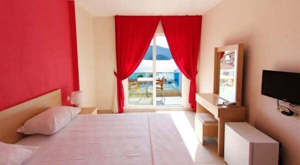
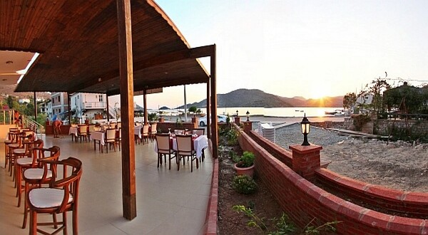
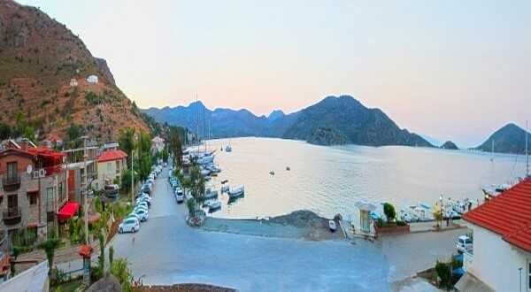

Koyun sakin tarafında
Doğaya yakın,
denize açık.
Yeşilova Koyu Yolu’nda, botanik bahçesi ve özel iskelesiyle yeşilden denize açılan sakin bir konaklama.
Defne Lorina’NIN RİTMİ
Bahçeden denize
ağır ağır açılın.
Taş mimari, botanik bahçe, verandalı odalar ve kıyıya yakın özel iskele; Defne Lorina’da gün yavaşça açılır.
Taş mimari, botanik bahçe ve verandalı odalar; günün temposu Yeşilova Koyu’nda yavaşlar.
Bahçeden kıyıya ↘
Defne Taş Ev Master Suite / Defne Lorina02KONAKLAMA
Defne Taş Ev Master Suite
45 m²’lik taş ev süiti; yüksek tavan, veranda, deniz ve doğa manzarası, king yatak ve şömine hissi veren sakin bir yaşam alanı.

DEFNE LORİNA’DA BİR GÜN
Yeşilin içinden koyun ışığına.
Bahçe kahvaltısı · kıyı sofrası
Bahçeden kıyıya
Bahçenin tazeliğini taşıyan kahvaltı; özel iskelenin yanında, denize birkaç adım mesafede uzun bir Ege sofrası.
Defne Lorina için sor ↗İLETİŞİM & KONUM
Defne Lorina
BOTANİK BAHÇE · ÖZEL İSKELE · BOZBURUNTaş mimari, botanik bahçe ve verandalı odalar; günün temposu Yeşilova Koyu’nda yavaşlar.
Özel iskele, otopark ve Yeşilova Koyu tekne ulaşımı